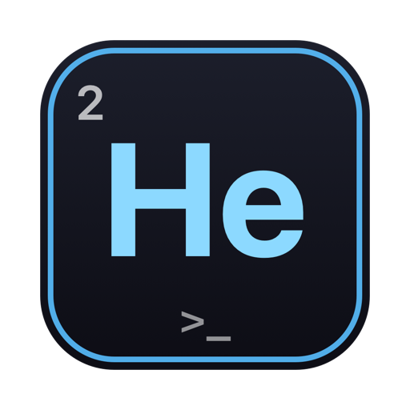
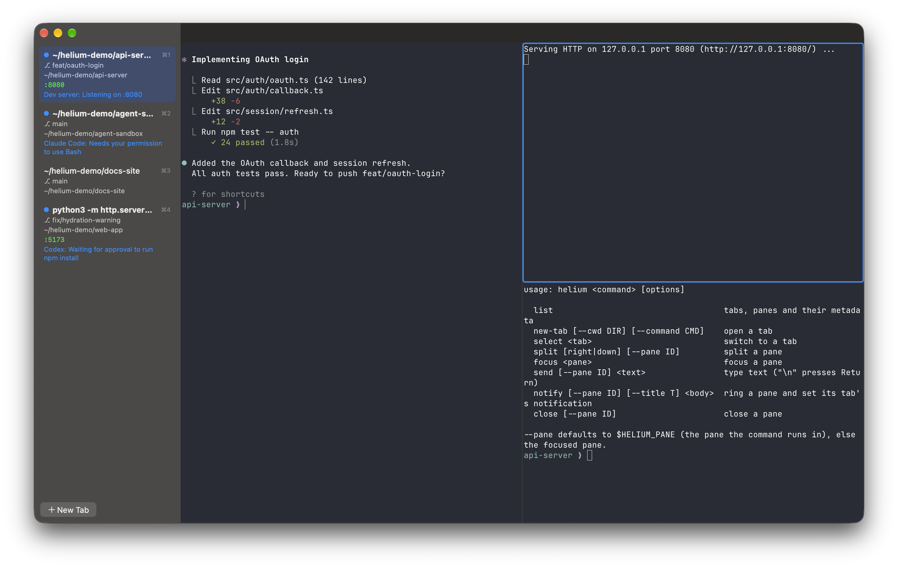

A tiny macOS terminal for running coding agents. See at a glance which agent is working, which one is done, and which one is waiting for you.

When Claude Code, Codex and a few dev servers run side by side, the hard part is knowing where to look. Helium keeps that in the sidebar.
Vertical tabs show each terminal's title, folder and listening ports, refreshed in the background. Above the terminal: the git branch, how far it is ahead or behind, and whether there are uncommitted changes.
Permission prompts and approval requests from Claude Code and Codex light the pane and its tab up in orange until you answer. Everything else gets a quiet green ring.
Press Cmd+Q and Helium brings back your tabs, splits and folders next time, resuming every Claude Code and Codex conversation with the flags it was started with.
Split any tab horizontally or vertically. Collapse related tabs into Chrome-style groups, add Gmail-style colored labels, or give a tab its own name with a double-click.
The helium command and a local socket open tabs, split panes, type into them and send notifications. Every pane knows its own ID, so an agent hook can ring the right one.
Fonts, themes and keybinds come from your existing Ghostty config. Settings covers the common options and lists every one of Ghostty's 600+ options with its documentation.
Hidden tabs and covered windows stop rendering and hand their GPU memory back. A window in the background goes quiet instead of blinking its cursor.
Helium updates itself from GitHub releases, and only installs a build that is signed by the same developer and notarized by Apple. It never restarts on its own.
Measured on Apple Silicon with both apps launched in the background on a fresh state, one terminal each, no input.
| Helium | iTerm2 3.7 | |
|---|---|---|
| App size | 15 MB | 176 MB |
| Launch until the window appears | ~250 ms | ~570 ms |
| Idle memory, one terminal | 62 MB | 203 MB |
| Idle CPU | 0.1 to 0.3% | 1.9 to 2.4% |
Medians of five launches. iTerm2's memory includes its session server. A covered or minimized Helium window stops rendering and frees its GPU buffers. The script is in the repo.
Apple Silicon, macOS 13 or later. Both install the app and the helium command.
brew install --cask yowmamasita/tap/helium-terminalzb install yowmamasita/tap/helium-terminalUntil then, build it from source with Xcode and Zig 0.16.0: scripts/build-ghostty.sh, then scripts/install-local.sh. See the README.